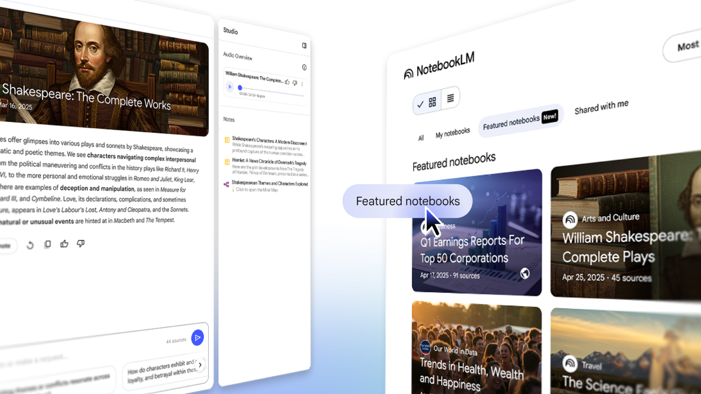
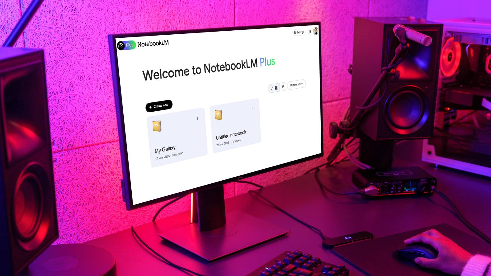

리서치의 미래를 만나다: NotebookLM의 새로운 무기, ‘Featured Notebooks’
1. 도입: 지식의 바다에서 길을 잃고 계신가요?
새로운 주제에 대해 깊이 있는 연구를 시작할 때, 가장 먼저 마주하는 난관은 무엇일까요? 아마도 “수많은 정보 중 어떤 것이 믿을 만한가?” 그리고 “이 방대한 자료를 언제 다 읽지?”라는 질문일 것입니다. 구글의 AI 기반 노트 도구인 NotebookLM이 이 질문에 대한 명쾌한 해답을 들고 돌아왔습니다. 바로 전문가들이 직접 큐레이션한 고품질 소스 모음, ‘Featured Notebooks(추천 노트북)’ 기능입니다.

NotebookLM 공식 블로그에서 소개된 Featured Notebooks의 모습2. 핵심 요약: 왜 ’Featured Notebooks’인가?
이번 업데이트의 핵심은 단순히 기능을 추가한 것이 아니라, ‘정보의 질’과 ‘탐색의 속도’를 동시에 잡았다는 데 있습니다. * 검증된 신뢰성: ‘The Economist’, ‘The Atlantic’ 등 세계적인 권위를 가진 기관의 자료를 기반으로 합니다. 단순히 인터넷의 파편화된 정보가 아닌, 정제된 지식을 바탕으로 시작할 수 있습니다. * 압도적인 효율성: 최대 90개가 넘는 방대한 소스를 AI가 즉시 분석합니다. 특히 대기 시간 없는 오디오 요약(Audio Overviews) 기능은 복잡한 자료를 단숨에 이해하게 돕습니다. * 지식 생태계의 완성: 일반 사용자의 공유를 넘어 전문가의 검증된 가이드라인이 결합되어, 누구나 전문가의 어깨 위에서 리서치를 시작할 수 있는 강력한 학습 환경을 구축합니다.
3. 상세 설명: 지식 탐색의 패러다임을 바꾸는 3가지 포인트
① 전문가의 시각으로 세상을 읽다
이제 사용자는 백지상태에서 리서치를 시작할 필요가 없습니다. 구글은 저명한 저자, 교수, 비영리 단체와 협력하여 건강, 금융, 여행, 심지어 셰익스피어의 작품까지 아우르는 ’전문가 큐레이션 노트북’을 제공합니다. 이는 단순한 자료 모음이 아니라, 전문가들이 중요하다고 판단한 소스들을 한데 모아놓은 ‘지식의 정수’와 같습니다. 사용자는 이 노트북을 열기만 하면 해당 분야 전문가의 리서치 폴더를 그대로 물려받는 효과를 누릴 수 있습니다.
② 스마트한 연구를 위한 기술적 진화
단순히 자료만 모아둔 것이 아닙니다. 기술적으로도 놀라운 진보를 보여줍니다. * 방대한 소스 처리: 어떤 추천 노트북은 무려 91개의 서로 다른 소스를 포함하고 있습니다. 개인이 일일이 읽기 힘든 양이지만, NotebookLM은 이를 한 번에 학습하여 사용자의 질문에 정확하게 답변합니다. * 즉각적인 오디오 오버뷰: 인기 기능인 ’Audio Overviews(대화형 요약)’가 미리 생성되어 있습니다. 노트북을 열자마자 복잡한 주제를 라디오 방송처럼 편하게 들으며 학습을 시작할 수 있어, 시각과 청각을 모두 활용한 입체적인 학습이 가능합니다.

NotebookLM을 활용한 스마트한 리서치 팁 (출처: XDA-Developers)③ 커뮤니티와 전문가의 만남, 지식 시너지
지난달 도입된 ‘노트북 공개 공유’ 기능이 일반 사용자들의 집단지성을 끌어냈다면, 이번 ’추천 노트북’은 그 위에 ‘전문성의 기둥’을 세운 격입니다. 신뢰할 수 있는 시작점(Expert-curated starting point)을 제공함으로써, 사용자들이 잘못된 정보에 빠지지 않고 올바른 리서치 방향을 잡을 수 있도록 돕습니다. 전문가가 만든 기초 위에 사용자가 자신의 분석을 덧붙여 나가는 과정은 진정한 ’지능의 확장’을 의미합니다.
4. 마무리: 지식 습득의 새로운 표준이 될 ‘추천 노트북’
NotebookLM의 ‘Featured Notebooks’ 기능은 단순히 편리한 기능을 넘어, 인공지능이 어떻게 인간의 전문성과 결합하여 학습의 질을 높일 수 있는지 보여주는 이정표입니다. 앞으로 더 많은 전문 기관과의 파트너십이 확대됨에 따라, 우리가 정보를 소비하고 지식을 구축하는 방식은 더욱 빠르고, 정확하며, 깊이 있게 변할 것입니다.
이제 전문가가 차려놓은 ‘지식의 성찬’을 NotebookLM에서 직접 경험해 보세요. 여러분의 리서치가 이전과는 전혀 다른 속도로 나아가게 될 것입니다.